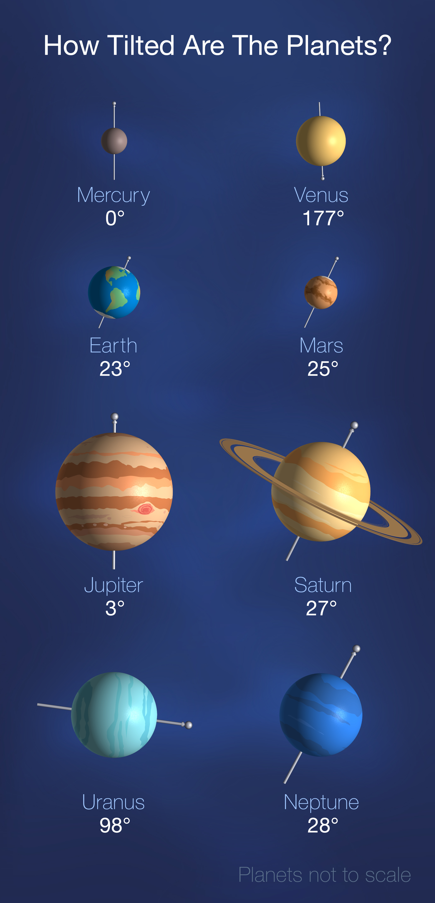

About Planet
Welcome to the enigmatic world of Uranus, a celestial puzzle nestled in the depths of our solar system!
The planet was unveiled by the visionary British astronomer William Herschel in 1781. Unlike its planetary counterparts, Uranus boasts a unique orientation, spinning majestically on its side as it dances around the sun. Its serene azure hue, derived from atmospheric methane, captivates the imagination and beckons explorers to unlock its secrets. Embark on a journey to uncover the mysteries of Uranus, where towering clouds, swirling storms, and icy moons weave a tapestry of cosmic wonders. Traverse the icy plains of Ariel, soar over the rugged terrain of Titania, and witness the captivating dance of rings encircling this celestial giant. But Uranus's allure extends beyond its physical features. Its peculiar magnetic field, tilted axis, and complex moon system provide scientists with a captivating puzzle to solve, offering insights into the formation and evolution of our solar system. Prepare for an extraordinary odyssey as you embark on a voyage to Uranus, where the mysteries of the cosmos await your exploration. Experience the awe-inspiring beauty of this distant world and delve into the depths of its secrets, where every discovery is a testament to the boundless wonders of the universe.
Uranus's Axial Tilt

Uranus, with its extreme axial tilt of approximately 98 degrees, is a celestial oddity in our solar system. This tilt is so extreme that Uranus essentially rolls on its side as it orbits the Sun. Unlike any other planet, Uranus appears to rotate on its side like a spinning top, creating unique and dramatic seasonal variations.
The cause of Uranus's extreme tilt remains a subject of scientific inquiry, with theories ranging from gravitational interactions with passing celestial bodies to colossal collisions in its distant past. This peculiar orientation has significant consequences for Uranus's atmosphere, magnetosphere, and climate, leading to long periods of sunlight and darkness at its poles.
Understanding Uranus's axial tilt is essential for unraveling the mysteries of its atmospheric dynamics, magnetic field, and moon system. Further exploration and study of Uranus promise to shed light on the mechanisms driving planetary evolution and diversity within our solar system.
Itinerary
| Duration | Activity | Location |
|---|---|---|
| 6 years | Space travel to Uranus in cryo sleep | Solar System |
| 1 month | Arrival and check-in at luxury orbital resort | Uranus Orbit |
| 2 weeks | Enjoying panoramic views of Uranus from resort | Uranus Orbit |
| 1 week | Excursion to the enigmatic Miranda | Miranda Surface |
| 1 week | Exploration of the icy canyons and cliffs of Ariel | Ariel Surface |
| 1 week | Discovery tour of the frozen landscape of Titania | Titania Surface |
| 2 weeks | Indulging in fine dining and entertainment at the resort | Uranus Orbit |
| 3 days | Experience the thrill of Uranus's atmospheric storms | Uranus Atmosphere |
| 6 years | Return journey to Earth in cryo sleep | Solar System |
Trip Cost
Embark on an extraordinary voyage to Uranus and its moons with our exclusive travel package.
- Travel Duration: 12 years
- Cost: $30 billion per person
- Inclusions: Accommodation, meals, excursions, entertainment, and return journey
- Optional Add-ons: Spacewalks, personalized tours, and zero-gravity experiences
Book your once-in-a-lifetime journey to Uranus today and explore the wonders of this distant ice giant and its captivating moons!